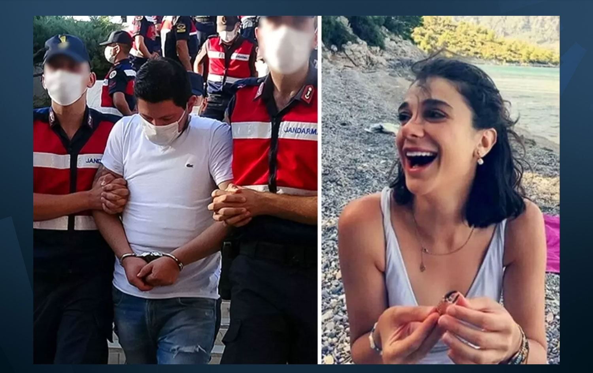

Pınar Gültekin cinayeti, sosyal medyada birçok kişi tarafından sorgulanan ve merak edilen konular arasında yer alıyor. Pınar Gültekin cinayeti davasında, istinaf tarafından gerekçeli kararın açıklanmasıyla birlikte, Pınar Gültekin'in kim olduğu, kaç yaşında ve neden öldürüldüğü araştırılmaya başladı. İşte Pınar Gültekin cinayeti hakkında bilgiler.?
Muğla Sıtkı Koçman Üniversitesi İktisat Bölümü öğrencisi Pınar Gültekin (27), 16 Temmuz 2020'de Akyaka Mahallesi'nde yalnız yaşadığı evinden ayrılmış, aynı gün ablasıyla telefonla görüştükten sonra kendisinden bir daha haber alınamamıştı
Ailesinin Akyaka Jandarma Komutanlığına kayıp ihbarında bulunması üzerine başlatılan çalışmada Gültekin'i tanıyan kişilerin listesi çıkarılmış ve bölgedeki güvenlik kamerası kayıtları incelenerek görgü tanıklarının ifadelerine başvurulmuştu
Şüphe üzerine gözaltına alınan genç kızın eski erkek arkadaşı Cemal Metin Avcı, ilk ifadesinde hakkındaki suçlamaları kabul etmese de deliller ortaya konunca bir süre arkadaşlık yapıp ayrıldığı Gültekin'i bağ evinde öldürdüğünü, cesedini yaktıktan sonra varille Gülağzı mevkisindeki ormanlık alana attığını itiraf etmiş ve tutuklanmıştı.
Cemal Metin Avcı'nın kardeşi Mertcan Avcı da soruşturma çerçevesinde telefon sinyallerinin ağabeyiyle aynı zaman diliminde olay yeri ve yakınlarında tespit edilmesi üzerine jandarma ekiplerince gözaltına alınmış, "delil karartmak" suçlamasıyla tutuklanmıştı. Yargılama sürerken Mertcan Avcı'nın tutuksuz yargılanmasına karar verilmişti.
Gültekin'in öldürülmesiyle ilgili davanın on üçüncü duruşmasında, sanık Cemal Metin Avcı, ağırlaştırılmış müebbet hapis cezasına çarptırılmış, sanığın cezası uygulanan haksız tahrik indirimiyle 23 yıla indirilmişti. Mahkeme, Mertcan Avcı ve diğer sanıkların beraatine hükmetmişti.
Gültekin'in öldürülmesiyle ilgili davanın on üçüncü duruşmasında, sanık Cemal Metin Avcı, ağırlaştırılmış müebbet hapis cezasına çarptırılmış, sanığın cezası uygulanan haksız tahrik indirimiyle 23 yıla indirilmişti. Mahkeme, Mertcan Avcı ve diğer sanıkların beraatine hükmetmişti.
